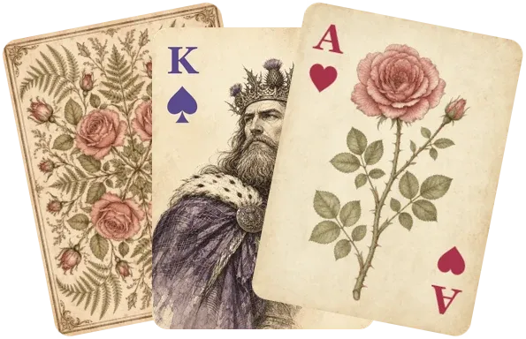
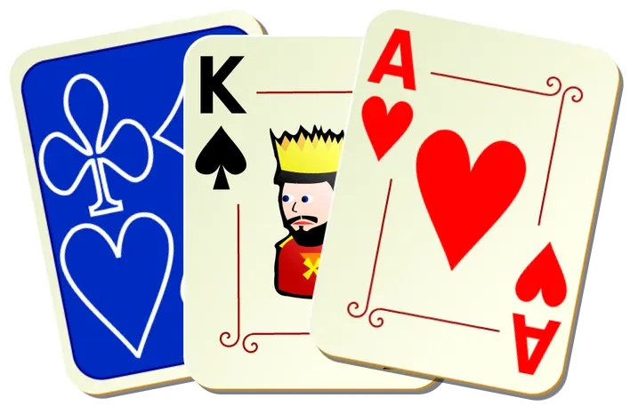
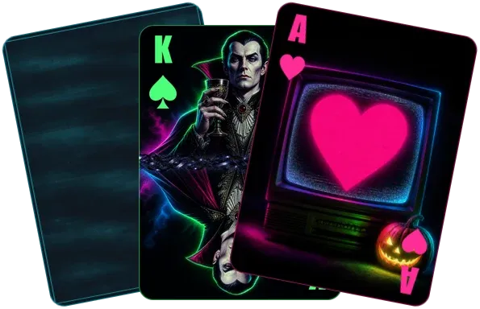

Felt House
O baralho da casa, o que o Cardz distribui até você escolher outro. Figuras, ases e coringas impressos no padrão francês, números com serifa nas cartas numeradas e um verso em filigrana de latão.
Baralhos
Troque quando quiser, até no meio da partida.
O baralho da casa, o que o Cardz distribui até você escolher outro. Figuras, ases e coringas impressos no padrão francês, números com serifa nas cartas numeradas e um verso em filigrana de latão.

Um baralho nórdico em xilogravura, com figuras de duas cabeças. O par de coringas Loki vale a pena encontrar.

O Egito antigo em papiro. Uma pequena cártula dourada ao lado de cada índice mostra o valor que forma treze com aquela carta, o que resolve boa parte do Pyramid com o canto do olho.

Deuses pintados em mármore, com um índice dourado sobre a placa.

Um livro de pranchas de herbário em tinta e aquarela, com os quatro naipes como quatro famílias de plantas — rosa, calêndula, trevo, cardo — sobre uma mesa de verde botânico profundo.

Gravado em tinta vermelhão e tinta ferrogálica, o vermelho e o preto clássicos, sobre uma escrivaninha de couro café.

Ornamentação vitoriana delicada sobre uma mesa adamascada. O primeiro baralho ilustrado que o Cardz lançou.
Arte das cartas de Nicu Buculei, do seu baralho ornamental no OpenClipart. Em domínio público (CC0 1.0).

Um baralho espacial: cartas azul-marinho escuro, naipes em órbita, figuras celestes e quatro cores de naipe em vez das duas de sempre.

Um fliperama à meia-noite. Cartas quase pretas iluminadas de ciano e magenta, com figuras de duas cabeças que brilham. O letreiro sobre a mesa zumbe e falha enquanto você joga.

Terror gótico em preto fuligem, carmim de sangue seco e cinza de osso, com retratos de figuras espelhados e ases em relicários. A mesa é uma pedra de altar iluminada por uma vela que tremula sob as cartas.

Um baralho de Halloween dos anos 80 numa fita de vídeo gasta: arte de capa de filme de terror, os vermelhos em magenta vivo e os pretos em verde gosma, cada ás numa televisão assombrada, e dois coringas zumbis. Linhas de varredura e uma barra de tracking correm pela mesa inteira. Desligue os efeitos de mesa e a fita pausa.

Formas de papel recortado em duas tintas sobre uma mesa escura: naipes em traços de contagem, e figuras reduzidas a uma coroa, um orbe e uma lâmina.

As viagens aéreas de meados do século como um cartaz ensolarado de companhia aérea. As figuras são a tripulação, cada ás é um avião que desenha seu naipe no céu, os coringas voam em lista de espera, e os versos são mapas de rotas em azul-marinho e laranja.

Laranja sinal e preto sobre papel branco-osso. Cada carta traz seu valor enorme, com barras de contagem nas cartas numeradas e ases inundados de sua cor, sobre uma mesa de pedra clara.
O Cardz também tem um baralho de alto contraste, que segue sua configuração do Windows, e um baralho para daltônicos com copas e ouros em azul contra espadas e paus em preto.
Os baralhos para baixar podem ser compartilhados e alterados para uso não comercial, nos termos da licença CC BY-NC 4.0.